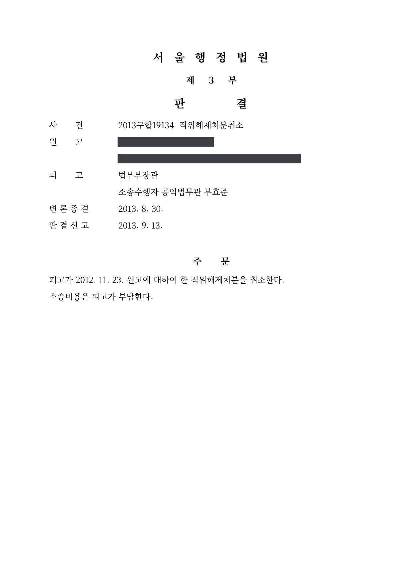
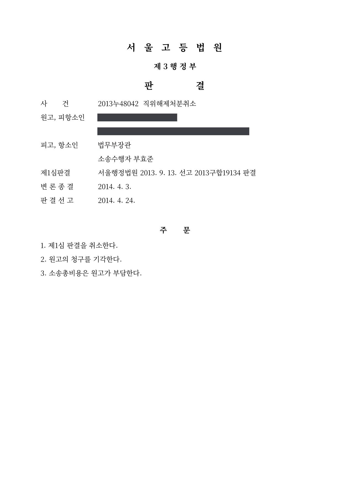
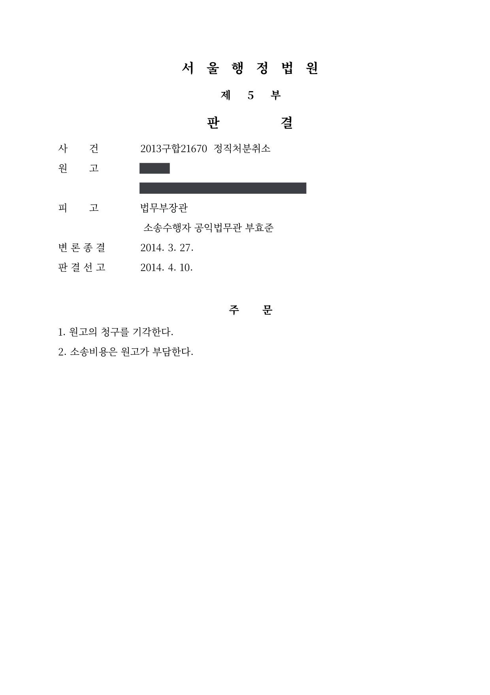
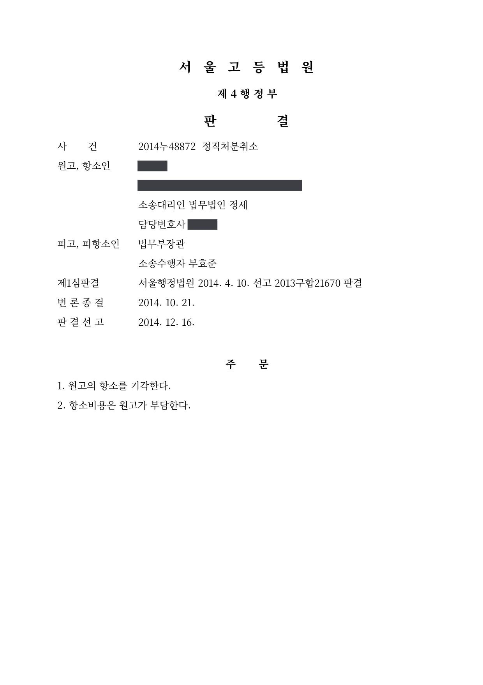
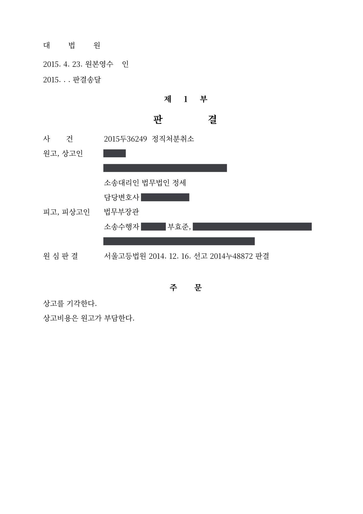

검찰 공무원 직위해제·정직처분 취소소송 (1·2·3심)
서울행정법원 2013구합19134 · 서울고등법원 2013누48042 · 서울행정법원 2013구합21670 · 서울고등법원 2014누48872 · 대법원 2015두36249 · 담당변호사 부효준
판결문





사건의 요지
사채업자와의 부적절한 금전거래 등 품위손상 행위를 이유로 한 검찰 공무원의 직위해제처분과 정직 3월 처분이 함께 다투어진 사건들입니다. 직위해제처분은 제1심에서 취소되었으나 항소심에서 청구가 받아들여지지 않았고, 정직처분은 대법원까지 적법성이 유지되었습니다.
사건의 주요 내용
원고는 검찰 공무원으로서, 지인 및 그 배우자와의 부적절한 금전거래와 지인에게 아파트 임차인 명의를 빌려준 행위 등이 품위를 손상하였다는 이유로 2010년 6월 해임처분을 받았습니다. 그러나 해임처분 취소소송에서 일부 징계사유는 징계사유로 삼을 수 없고 나머지 사유만으로 공무원 신분을 박탈하는 것은 지나치게 가혹하다는 이유로 해임이 취소되었고, 이 판결은 2012년 10월 확정되었습니다.
처분청은 2012년 11월 확정판결에서 인정된 비위사실을 사유로 다시 중징계 의결을 요구하면서 국가공무원법 제73조의3 제1항 제3호에 따라 원고를 직위해제하였고, 중앙징계위원회의 의결을 거쳐 2013년 2월 정직 3개월 처분을 하였습니다. 원고는 두 처분에 대하여 각각 소청심사를 거쳐 취소소송을 제기하였습니다.
직위해제 사건은 1심(서울행정법원 2013구합19134)에서 처분이 취소되었으나, 항소심(서울고등법원 2013누48042)이 2014년 4월 1심 판결을 취소하고 원고의 청구를 받아들이지 않았습니다. 정직 사건은 1심(서울행정법원 2013구합21670)과 항소심(서울고등법원 2014누48872)에서 모두 청구가 받아들여지지 않고, 대법원(2015두36249)이 2015년 4월 심리불속행으로 상고심을 마무리하여 확정되었습니다. 부효준 변호사는 두 사건 모두 처분청 측 소송수행자로 참여하였습니다.
원고의 주장
- 직위해제에 관하여는, 국가공무원법 제73조의3 제1항 제3호는 파면부터 정직까지 모든 중징계가 가능한 경우에만 직위해제를 허용하는데, 해임을 취소한 판결이 확정되어 파면·해임이 불가능하고 비위 당시에는 강등이 징계 종류에 없었으므로 정직만 가능한 원고는 직위해제 대상이 아니며, 직위해제의 필요성을 고려하지 않은 처분은 재량권을 일탈한 것이라고 주장하였습니다.
- 정직에 관하여는, 지인의 배우자에게서 받은 7천만 원은 차용금으로서 모두 변제하였으므로 단순한 금전거래에 불과하고, 임차인 명의 대여는 부적절한 목적을 알지 못하였을 뿐 아니라 2007년 봄의 행위이므로 2년의 징계시효가 지났다고 주장하였습니다.
- 또한 행위 당시의 비위처리지침에는 무이자 차용이나 명의 대여가 징계대상행위로 들어 있지 않았고, 20여 년간 성실히 근무하였으며 선행 해임처분으로 오랜 고통을 받았다는 점 등에 비추어 정직 3개월은 지나치게 무거워 재량권을 일탈·남용하였다고 주장하였습니다.
부효준 변호사의 주장
- 국가공무원법 제73조의3 제1항 제3호는 파면·해임·강등·정직 중 어느 하나에 해당하는 징계 의결이 요구된 사람이면 적용되는 것으로 해석해야 하고, 직위해제는 징계가 아니라 업무상 장애를 예방하기 위한 잠정적 인사조치로서 임용권자의 인사재량에 속하므로, 중징계 의결이 요구된 원고에 대한 직위해제는 재량권 일탈·남용이 없는 한 적법하다고 주장하였습니다.
- 항소심에서는 추가 증거를 제출하면서, 확정판결이 징계사유로 인정한 비위사실에 비추어 중징계를 받을 상당한 개연성이 있고, 높은 청렴성이 요구되는 직위에 있던 원고가 계속 직무를 담당할 경우 직무수행에 장애가 예상된다는 점을 밝혔습니다.
- 정직 사건에서는 7천만 원이 차용금이 아니라 변호사 선임비용 명목으로 맡겨진 돈인데 그중 2천만 원을 개인 용도로 쓰고 징계가 문제된 뒤에야 돌려준 점 등을 들어 품위유지의무 위반이 인정되고, 수수 금액과 원고의 지위, 과거 경고·벌금 전력 등에 비추어 징계양정기준의 범위 안에서 이루어진 정직 3개월은 적정하다고 주장하였습니다.
법원의 판단
직위해제 사건의 1심은 정직만 가능한 예외적인 경우에는 공익상 직위해제가 불가피한 특별한 사정을 처분청이 증명해야 하는데 그런 사정이 없다며 처분을 취소하였습니다. 그러나 항소심은 국가공무원법 제73조의3 제1항 제3호가 파면·해임·강등·정직 중 어느 하나에 해당하는 징계 의결이 요구된 사람에게 적용된다고 해석하고, 직위해제는 임용권자에게 상당한 재량이 있는 잠정적 조치이며 재량권 일탈·남용의 증명책임은 이를 주장하는 쪽에 있다는 대법원 판례를 전제로 하였습니다.
그리고 확정판결이 징계사유로 인정한 비위사실에 비추어 중징계를 받을 상당한 개연성이 있고 계속 직무를 맡길 경우 업무상 장애가 예상되므로 직위해제는 위법하지 않으며(대법원 98두15412 판결 참조), 정직만 가능한 경우에는 특별한 사정이 있어야 한다는 주장은 입법론의 문제라고 보아 1심 판결을 취소하고 청구를 받아들이지 않았습니다.
정직 사건의 1심은 두 징계사유를 모두 인정하고 재량권 일탈·남용도 부정하였습니다. 항소심은 7천만 원이 차용금이 아니라는 점 등을 들어 제1징계사유는 인정하였으나, 임차인 명의 대여는 명의를 빌려준 때 완료된 행위이므로 2년의 징계시효가 지나 징계사유로 삼을 수 없다고 보았습니다. 다만 여러 징계사유 중 일부가 인정되지 않아도 나머지 사유만으로 징계의 타당성이 충분하면 처분을 유지할 수 있고 시효가 지난 비위도 양정에 참작할 수 있다는 법리에 따라, 원고의 지위와 금액, 과거 전력 등을 종합하여 정직 3개월이 재량권을 벗어나지 않았다고 판단하고 항소를 받아들이지 않았습니다. 대법원은 2015년 4월 심리불속행 판결로 상고심을 마무리하였습니다.
국가공무원법 제73조의3 제1항이 정한 직위해제는 일반적으로 공무원이 직무수행능력이 부족하거나 근무성적이 극히 나쁜 경우, 공무원에 대한 파면․해임․강등 또는 정직에 해당하는 징계 의결이 요구 중인 경우, 공무원이 형사사건으로 기소된 경우 등에 있어서 당해 공무원이 장래에 있어서 계속 직무를 담당하게 될 경우 예상되는 업무상의 장애 등을 예방하기 위하여 일시적으로 당해 공무원에게 직위를 부여하지 아니함으로써 직무에 종사하지 못하도록 하는 잠정적인 조치로서의 보직의 해제를 의미한다(대법원 2003. 10. 10. 선고 2003두5945 판결 등 참조). 이러한 직위해제 처분은 임용권자의 고유한 인사권한의 범주에 드는 것으로서 임용권자에게 상당한 재량을 가진 재량행위에 해당된다고 해석되므로, 직위해제 처분이 국가공무원법 등에 위반되거나 권리남용에 해당되는 등으로 재량권의 일탈ㆍ남용으로 볼 수 있는 특별한 사정이 없는 한 위법하다고 볼 수 없다 할 것이다(대법원 2006. 8. 25. 선고 2006두5151 판결 등 참조).
서울고등법원 2013누48042 판결 이유 '5. 나. (1) 관련 법리'
나아가, 원고처럼 관련 판결의 확정에 따라 사실상 정직의 징계처분만 가능한 경우에 직위해제 처분을 하는 것이 당연히 재량권의 한계를 벗어난 것이라고 보기는 어려울 뿐만 아니라, 원고에 대하여는 공익상 직위해제 처분이 불가피하다고 보지 않을 수 없는 특별한 사정이 존재할 경우에만 직위해제 처분이 가능하다는 원고의 위 주장도 어디까지나 입법론적인 문제로 보일 뿐, 현행 국가공무원법 제73조의3 제1항 등의 해석론의 영역을 벗어난다고 판단되어 이를 받아들일 수 없다.
서울고등법원 2013누48042 판결 이유 '5. 나. (2) 판단 ③'
여러 개의 징계사유 중 일부가 인정되지 않으나 인정되는 다른 일부 징계사유만으로도 당해 징계처분의 타당성을 인정하기에 충분한 경우에는 그 징계처분을 그대로 유지하여도 위법하지 아니하다(대법원 2007. 12. 28. 선고 2006다33999 판결, 대법원 2014. 6. 26. 선고 2014두35799 판결 등 참조).
서울고등법원 2014누48872 판결 이유 '2. 마. 재량권 일탈․남용 여부에 관한 판단 (1)'
※ 판결 이유 가운데 이 사건의 판단 기준이 된 부분을 그대로 옮긴 것으로, 당사자 이름 등은 가렸습니다.
이 사건이 보여 주는 것
징계처분이 법원에서 취소되면 처분청은 국가공무원법 제78조의3에 따라 다시 징계 의결을 요구하여야 하고, 그 과정에서 직위해제가 함께 이루어질 수 있습니다. 이 사건은 선행 판결로 사실상 정직만 가능해진 공무원에 대하여도 중징계 의결 요구가 있으면 직위해제가 가능하며, 직위해제는 징계가 아닌 잠정적 인사조치로서 그 위법을 주장하는 쪽이 재량권 일탈·남용을 증명해야 한다는 점을 보여 줍니다.
한편 정직 사건에서는 징계사유 가운데 하나가 징계시효 도과로 제외되었는데도 처분이 유지되었습니다. 여러 징계사유 중 일부가 탈락하더라도 남은 사유만으로 양정이 정당화되면 처분은 적법하고, 시효가 지난 비위도 양정에 참작될 수 있으므로, 징계를 다투는 쪽은 개별 사유의 부존재를 다투는 것만으로는 부족하고 전체 양정의 균형을 함께 따져야 합니다.
관련 법령국가공무원법 제63조, 제73조의3 제1항 제3호, 제78조 제1항, 제78조의3, 제79조 · 구 공무원 징계령 시행규칙 제2조 제1항 [별표 1] · 공무원보수규정 제14조, 제15조, 제29조, 제30조 · 변호사법 제36조
관련 단어직위해제정직 3개월품위유지의무재징계해임처분 취소 후 재처분국가공무원법 제73조의3징계시효인사재량재량권 일탈·남용소청심사심리불속행중징계 의결 요구
이 사건의 소개 글은 인스타그램(@lawyer.boo)에도 있습니다.
비슷한 처분을 받으셨다면
행정처분은 처분이 있음을 안 날부터 90일 이내에 행정심판이나 취소소송으로 다투어야 하고, 기간이 지나면 돌이킬 수 없는 처분은 집행정지를 서둘러야 합니다. 처분서를 받은 날짜부터 확인해 드립니다.